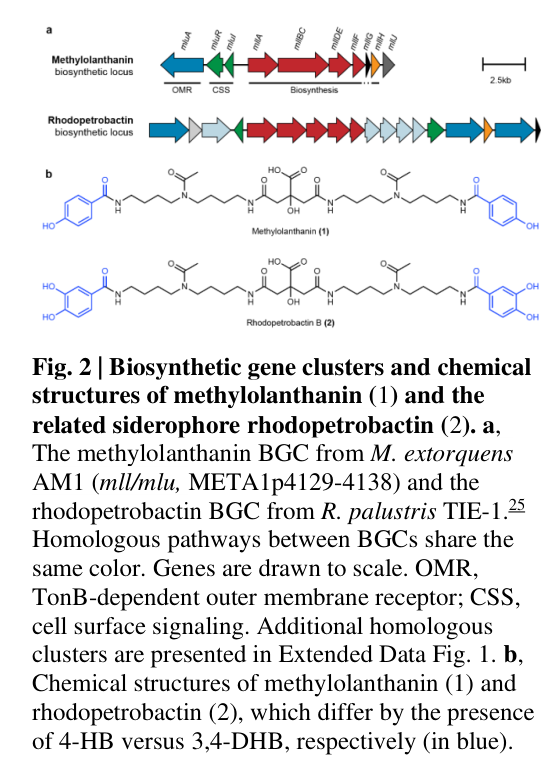

mllF (locus MexAM1_META1p4135) is a xylose isomerase-like TIM barrel domain-containing protein (Pfam PF01261; InterPro IolE/XylAMocC-like family) encoded within the mll/mlu biosynthetic gene cluster (META1p4129-4138) of Methylorubrum extorquens AM1. This cluster produces methylolanthanin, the first reported biological lanthanide chelator (a lanthanophore, NOT an iron siderophore). The cluster is induced ~32-fold under poorly soluble lanthanide conditions (Nd2O3 vs NdCl3) and is required for normal lanthanide bioaccumulation. mllF is grouped with genes (mllA/mllBC/mllDE/mllF) homologous to the petrobactin asbABCDEF locus and is the conceptual analog of AsbF, a Mn2+-dependent 3-dehydroshikimate dehydratase. However, mllF matches PF01261 only weakly (low HMM bitscore; "PF01261-related but divergent") and has NOT been individually biochemically characterized, so its specific catalyzed reaction and substrate are unresolved. The TIM-barrel/IolE-XylA fold encompasses isomerases, epimerases and dehydratases (lyases), so the family name alone does not establish isomerase activity; the closest characterized homolog is in fact a lyase, making a specific isomerase assignment an over-annotation. The defensible inference is that mllF is a metal-dependent TIM-barrel enzyme contributing to methylolanthanin (secondary metabolite) biosynthesis, most plausibly supplying an aromatic acid building block.
Definition: The chemical reactions and pathways resulting in the formation of a lanthanophore, a low-molecular-weight metallophore secreted to bind and solubilize lanthanide (rare-earth) ions for cellular acquisition, analogous to siderophore biosynthetic process (GO:0019290) but specific to lanthanide chelation.
Justification: Methylolanthanin is the first described biological lanthanide chelator; existing GO siderophore terms are iron-specific and do not capture lanthanide-targeted metallophore biosynthesis. Currently the best available parent is GO:0044550 (secondary metabolite biosynthetic process).
| GO Term | Evidence | Action | Reason |
|---|---|---|---|
|
GO:0003824
catalytic activity
|
IEA | NEW |
Summary: No curated GOA annotation exists for mllF. The prior review asserted a specific isomerase activity (GO:0016853) purely from the UniProt/Pfam family name "Xylose isomerase-like TIM barrel" (PF01261); this is removed as an over-annotation. The deep-research evidence shows the specific isomerase reaction is not established: mllF has only a weak (low-bitscore) match to PF01261, has not been individually characterized, and the closest characterized homolog (AsbF) is a 3-dehydroshikimate dehydratase (a lyase, EC 4.2.1.-), not an isomerase. The xylose-isomerase-like / IolE-XylA TIM-barrel superfamily contains isomerases, epimerases and dehydratases, so the fold name does not support a specific isomerase claim. The defensible molecular function is the general claim that mllF is a (metal-dependent) catalytic enzyme.
Reason: Replaces the prior unsupported isomerase over-annotation with a general catalytic activity term that is consistent with the divergent TIM-barrel metalloenzyme evidence; specific reaction remains to be determined experimentally.
Supporting Evidence:
file:METEA/mllF/mllF-deep-research-falcon.md
no asbF model was used** in genome mining because **mllF had a low bitscore to Pfam PF01261**
file:METEA/mllF/mllF-deep-research-falcon.md
PF01261-related but divergent
|
|
GO:0044550
secondary metabolite biosynthetic process
|
IEA | NEW |
Summary: mllF is a structural member of the mll/mlu biosynthetic gene cluster that produces the secondary metabolite methylolanthanin (a lanthanophore). Secondary metabolite biosynthetic process is preferred over siderophore biosynthesis (GO:0019290) because the product chelates lanthanides, not iron, and UniProt does not assert a siderophore function. This process annotation is supported by cluster-level transcriptomic and genetic evidence (deep research), not by direct single-gene characterization, so it is added as a non-experimental (IEA-level) inference.
Reason: Captures the well-supported biological process role of mllF within methylolanthanin biosynthesis without overstating a specific iron siderophore role.
Supporting Evidence:
file:METEA/mllF/mllF-deep-research-falcon.md
part of the **mll/mlu biosynthetic gene cluster (BGC)** responsible for production of the lanthanide-binding metallophore **methylolanthanin
file:METEA/mllF/mllF-deep-research-falcon.md
an average of **~32-fold** higher expression during growth with **Nd2O3** versus **NdCl3**
|
Q: What specific reaction does mllF catalyze, and what is its substrate? Is it a 3-dehydroshikimate dehydratase like AsbF, or a divergent reaction producing/modifying the 4-hydroxybenzoate moiety of methylolanthanin?
Q: Which divalent metal (e.g., Mn2+) does mllF require, given its AsbF-like TIM-barrel metalloenzyme classification?
Experiment: Heterologously express and purify mllF, then assay for 3-dehydroshikimate dehydratase activity (UV at ~290 nm; LC-MS for aromatic acid products) and test divalent-metal dependence (Mn2+ vs Zn2+ vs others), following the AsbF assay template.
Experiment: Construct a clean in-frame mllF single-gene deletion within the mll cluster and assay methylolanthanin production (UPLC-MS/MS), lanthanide bioaccumulation (ICP-MS), and growth on poorly soluble Nd2O3 to attribute a specific biosynthetic step to mllF.
The research report should be a detailed narrative explaining the function, biological processes, and localization of the gene product. Citations should be given for all claims.
You should prioritize authoritative reviews and primary scientific literature when conducting research. You can supplement
this with annotations you find in gene/protein databases, but these can be outdated or inaccurate.
We are specifically interested in the primary function of the gene - for enzymes, what reaction is catalyzed, and what is the substrate specificity? For transporters, what is the substrate? For structural proteins or adapters, what is the broader structural role? For signaling molecules, what is the role in the pathway.
We are interested in where in or outside the cell the gene product carries out its function.
We are also interested in the signaling or biochemical pathways in which the gene functions. We are less interested in broad pleiotropic effects, except where these elucidate the precise role.
Include evidence where possible. We are interested in both experimental evidence as well as inference from structure, evolution, or bioinformatic analysis. Precise studies should be prioritized over high-throughput, where available.
The gene mllF corresponds to locus META1p4135 in Methylorubrum (Methylobacterium) extorquens strain AM1 and is part of the mll/mlu biosynthetic gene cluster (BGC) responsible for production of the lanthanide-binding metallophore methylolanthanin (MLL). (zytnick2022discoveryandcharacterization pages 3-5, zytnick2022discoveryandcharacterization pages 5-8)
Direct experimental work to date establishes the cluster-level role of mll (including mllF) in improving growth under poorly soluble lanthanide conditions and in increasing cellular lanthanide bioaccumulation, but does not provide a single-gene biochemical characterization of the mllF enzyme product. (zytnick2022discoveryandcharacterization pages 8-10, zytnick2022discoveryandcharacterization pages 10-12)
Based on domain/family evidence and comparison to the closest well-characterized functional analog AsbF (Pfam PF01261, a TIM-barrel dehydroshikimate dehydratase used in petrobactin biosynthesis), mllF is most plausibly a divergent AsbF-like metalloenzyme supplying an aromatic acid building block for methylolanthanin, but this remains an inference because the authors explicitly report weak matching of mllF to the PF01261 model. (pfleger2008structuralandfunctional pages 2-4, zytnick2022discoveryandcharacterization pages 10-12)
Lanthanides (Ln) are cofactors for certain periplasmic alcohol dehydrogenases (e.g., XoxF-type methanol dehydrogenases) in diverse bacteria, but the mechanisms enabling uptake and utilization under environmentally low Ln bioavailability are incompletely understood. (zytnick2022discoveryandcharacterization pages 1-3)
Bacteria often deploy metallophores (small-molecule chelators) plus transport and regulatory systems (e.g., TonB-dependent receptors, ABC transporters, and cell-surface signaling modules) to solubilize and import metals. (zytnick2022discoveryandcharacterization pages 1-3)
Zytnick et al. report methylolanthanin as the first known biological lanthanide chelator (lanthanophore), discovered via transcriptional response of M. extorquens AM1 to a poorly soluble lanthanide source (Nd2O3). (zytnick2022discoveryandcharacterization pages 1-3)
The mll/mlu BGC is located at META1p4129–META1p4138, and mllF is explicitly assigned to locus META1p4135 within this BGC. (zytnick2022discoveryandcharacterization pages 3-5, zytnick2022discoveryandcharacterization pages 5-8)
AsbF is a Mn2+-dependent 3-dehydroshikimate (3-DHS) dehydratase that converts 3-DHS → 3,4-dihydroxybenzoic acid (3,4-DHBA; protocatechuate), providing an aromatic chelating subunit for the siderophore petrobactin. (pfleger2008structuralandfunctional pages 2-4, pfleger2008structuralandfunctional pages 1-2)
AsbF is an (α/β)8 TIM-barrel metalloenzyme; the structural family is described as related to the “xylose isomerase TIM-barrel family” and is annotated in the AP endonuclease 2 TIM-barrel protein family context. (pfleger2008structuralandfunctional pages 2-4, pfleger2008structuralandfunctional pages 1-2)
Within the methylolanthanin study, META1p4135 is annotated as mllF and is part of the methylolanthanin BGC, matching the requested organism/context (M. extorquens AM1). (zytnick2022discoveryandcharacterization pages 3-5, zytnick2022discoveryandcharacterization pages 5-8)
The same study explicitly discusses mllF in relation to the Pfam model PF01261, which is consistent with the UniProt-provided domain cue (PF01261). (zytnick2022discoveryandcharacterization pages 10-12)
Therefore, the literature retrieved supports that the user’s target (UniProt C5B1I7; locus MexAM1_META1p4135/META1p4135) corresponds to mllF in the methylolanthanin (mll) BGC context, and not a different “mllF” from another organism. (zytnick2022discoveryandcharacterization pages 3-5)
Zytnick et al. report that genes META1p4132–4135 (mllA, mllBC, mllDE, mllF) are homologous to the petrobactin biosynthetic locus asbABCDEF, and that the broader locus resembles BGCs for NRPS-independent siderophore biosynthesis (e.g., rhodopetrobactin/petrobactin/roseobactin). (zytnick2022discoveryandcharacterization pages 3-5)
This comparative genomics context supports a role for mllF in biosynthesis of the lanthanophore methylolanthanin, rather than in downstream transport (which is typically carried by receptor/transport genes elsewhere in the locus). (zytnick2022discoveryandcharacterization pages 1-3)
Methylolanthanin’s structure contains two 4-hydroxybenzoate (4-HB) moieties, linked via homospermidine residues to a central citrate core. (zytnick2022discoveryandcharacterization pages 5-8)
This is a crucial clue: if mllF is functionally analogous to AsbF (which generates 3,4-DHBA), then mllF could (hypothetically) be involved in producing an aromatic acid precursor—potentially a hydroxybenzoate-related building block—used to assemble methylolanthanin’s 4-HB groups. However, the study does not directly assign that step to mllF. (zytnick2022discoveryandcharacterization pages 5-8, zytnick2022discoveryandcharacterization pages 10-12)
The mll locus is reported as highly induced under Nd2O3 (poorly soluble) compared with NdCl3 (soluble), with an average induction of approximately ~32-fold. (zytnick2022discoveryandcharacterization pages 3-5, zytnick2022discoveryandcharacterization pages 1-3)
This induction pattern supports a role in scavenging or solubilization of lanthanides when they are poorly bioavailable. (zytnick2022discoveryandcharacterization pages 1-3)
Zytnick et al. report that deletion of the mll cluster (ΔmxaFΔmll) results in reduced lanthanide bioaccumulation (noted as ~30% decrease in one discussion passage), while overexpression increases accumulation. (zytnick2022discoveryandcharacterization pages 10-12, zytnick2022discoveryandcharacterization pages 8-10)
Quantitatively, intracellular Nd (ICP-MS) showed:
- mll deletion decreased Nd bioaccumulation, notably by 1.8-fold in the NdCl3 condition
- mll overexpression increased Nd bioaccumulation by 3.5-fold on average
These are direct physiological readouts of the cluster’s function in lanthanide acquisition/handling. (zytnick2022discoveryandcharacterization pages 8-10)
Using UPLC-MS/MS and NMR, the authors identify methylolanthanin and establish its 4-HB-containing structure. (zytnick2022discoveryandcharacterization pages 5-8)
They further show by direct injection MS that methylolanthanin forms complexes with La(III), Nd(III), and Lu(III) (detected as [MLL-H+ + Ln3+]2+), supporting broad Ln-binding capability. (zytnick2022discoveryandcharacterization pages 8-10)
Overexpression of the mll cluster improved growth on poorly soluble Nd2O3, with a reported growth rate 0.026 hr−1, described as a nearly 50% increase relative to the ΔmxaF strain under Nd2O3 and closer to 0.037 hr−1 for ΔmxaF on NdCl3. (zytnick2022discoveryandcharacterization pages 8-10)
Addition of purified methylolanthanin (50 nM) increased growth yield (max OD) of both ΔmxaF and ΔmxaFΔmll cultures in NdCl3. (zytnick2022discoveryandcharacterization pages 8-10)
Important limitation: these experiments manipulate the entire mll cluster, so they do not isolate the specific contribution of mllF versus other biosynthetic genes. (zytnick2022discoveryandcharacterization pages 8-10, zytnick2022discoveryandcharacterization pages 3-5)
For comparative genomics detection of petrobactin-like BGCs, Zytnick et al. state that no asbF model was used because of a low bitscore between mllF and the expected Pfam model PF01261. (zytnick2022discoveryandcharacterization pages 10-12)
This implies that mllF is not confidently annotated by standard PF01261 HMM thresholds, but it is close enough to be considered in the same conceptual neighborhood (especially given the locus’ overall similarity to asb genes). (zytnick2022discoveryandcharacterization pages 3-5, zytnick2022discoveryandcharacterization pages 10-12)
AsbF catalyzes dehydration of 3-dehydroshikimate to 3,4-DHBA, and requires a divalent metal with Mn2+ preferred (Zn2+ inhibitory). (pfleger2008structuralandfunctional pages 2-4)
Reported kinetics (pH 7.5): Km ~290 µM, kcat ~80 min−1. (pfleger2008structuralandfunctional pages 2-4)
Structural and mechanistic features include a TIM-barrel fold, metal coordination in the active site, and an E1CB-like mechanism involving enolate stabilization by Mn2+. (pfleger2008structuralandfunctional pages 2-4, pfleger2008structuralandfunctional pages 4-5)
These details provide a concrete biochemical template for the kinds of reactions a PF01261-like enzyme can catalyze, and therefore what kinds of assays (e.g., UV at 290 nm, LC–MS for aromatic acid formation, metal dependence tests) would be appropriate to test mllF function. (pfleger2008structuralandfunctional pages 5-6, pfleger2008structuralandfunctional pages 2-2)
Best-supported hypothesis (not yet experimentally proven for mllF): mllF encodes a TIM-barrel metalloenzyme in the PF01261/AsbF-like functional space, contributing to production of an aromatic acid precursor used for methylolanthanin’s hydroxybenzoate moieties. (zytnick2022discoveryandcharacterization pages 5-8, pfleger2008structuralandfunctional pages 2-4)
Caveat: because methylolanthanin contains 4-hydroxybenzoate rather than 3,4-DHBA and because mllF’s match to PF01261 is weak, mllF may catalyze a non-canonical variant reaction relative to AsbF, or may have diverged substrate specificity/chemistry while retaining a related fold. (zytnick2022discoveryandcharacterization pages 5-8, zytnick2022discoveryandcharacterization pages 10-12)
No direct subcellular localization experiments for the mllF protein were found in the retrieved literature. (zytnick2022discoveryandcharacterization pages 10-12)
Given its placement in a small-molecule biosynthetic gene cluster (rather than a transporter/receptor gene), and by analogy to cytosolic steps in many NRPS-independent siderophore pathways, the most plausible localization for the mllF-encoded biosynthetic reaction is intracellular (cytosolic), with methylolanthanin subsequently functioning extracellularly/periplasmically in lanthanide acquisition (via transport systems encoded in/near the BGC). This remains an inference and should be validated experimentally. (zytnick2022discoveryandcharacterization pages 1-3, zytnick2022discoveryandcharacterization pages 8-10)
The primary body of evidence here comes from Zytnick et al.’s bioRxiv preprint (DOI: https://doi.org/10.1101/2022.01.19.476857), explicitly noted as posted Nov 10, 2023 in the retrieved text, describing methylolanthanin’s structure, lanthanide binding, the mll BGC organization, and phenotypes of deletion/overexpression. (zytnick2022discoveryandcharacterization pages 10-12, zytnick2022discoveryandcharacterization pages 5-8)
Valdés et al. (2024-11, Communications Biology; https://doi.org/10.1038/s42003-024-07258-3) studied LanM homologs and Ln preference in Hyphomicrobium, emphasizing the expanding toolkit of biological Ln-binding macromolecules and their potential relevance for sustainable Ln recovery; while this does not directly annotate mllF, it underscores increasing focus on Ln-binding strategies among methylotroph-adjacent taxa. (valdes2024anovelinsilico pages 1-2)
A 2024 PNAS article (“Identification and characterization of a small-molecule metallophore involved in lanthanide metabolism”, DOI https://doi.org/10.1073/pnas.2322096121) was flagged as unobtainable in the retrieval results, so its claims cannot be incorporated as evidence here. (retrieval log)
The methylolanthanin work frames M. extorquens AM1 as a candidate organism for selective bioaccumulation and recovery of lanthanides from waste streams (e.g., electronic waste, magnets), and demonstrates that manipulating the mll pathway can substantially alter intracellular Nd accumulation (up to 3.5-fold increase upon overexpression). (zytnick2022discoveryandcharacterization pages 8-10, zytnick2022discoveryandcharacterization pages 10-12)
These findings support a near-term application space: engineering of metallophore production pathways to improve biomining/bioleaching efficiency and selectivity, although scale-up and process-level validation are beyond the scope of the cited study. (zytnick2022discoveryandcharacterization pages 8-10)
Zytnick et al. argue that methylolanthanin’s narrow distribution and similarity to Fe-siderophore systems suggests the pathway may have entered Methylorubrum via horizontal gene transfer and subsequently evolved toward Ln chelation, though they emphasize that further study is needed to confirm this hypothesis. (zytnick2022discoveryandcharacterization pages 8-10)
They further propose an evolutionary rationale for methylolanthanin’s unusual 4-HB moiety (relative to typical bidentate catecholates), suggesting selection may balance Ln acquisition with avoidance of toxic Fe overaccumulation; they note Fe bioaccumulation was unaffected by mll overexpression in their system. (zytnick2022discoveryandcharacterization pages 10-12)
Key quantitative results relevant to the mll locus (including mllF) include:
- ~32-fold induction of the mll locus under Nd2O3 vs NdCl3 conditions (RNA-seq). (zytnick2022discoveryandcharacterization pages 3-5)
- Growth-rate changes under Nd2O3 and NdCl3 upon mll overexpression: 0.026 hr−1 (Nd2O3, ΔmxaF/pAZ1) and 0.037 hr−1 (NdCl3, ΔmxaF reference). (zytnick2022discoveryandcharacterization pages 8-10)
- Intracellular Nd accumulation changes by ICP-MS: 1.8-fold decrease upon mll deletion (NdCl3 condition) and 3.5-fold increase on average upon overexpression. (zytnick2022discoveryandcharacterization pages 8-10)
- Reference enzymology for PF01261 analog AsbF: Km ~290 µM and kcat ~80 min−1 (pH 7.5). (pfleger2008structuralandfunctional pages 2-4)
The following table distinguishes experimentally established facts from inference for mllF.
| Claim / annotation item | Evidence type | Key supporting details / quantitative values | Confidence | Primary citation(s) |
|---|---|---|---|---|
| mllF identity and membership in the methylolanthanin BGC | Direct experiment in M. extorquens AM1; comparative genomics | META1p4135 is explicitly annotated as mllF within the mll/mlu biosynthetic gene cluster spanning META1p4129–META1p4138; the cluster is described as homologous in part to the petrobactin asb locus, placing mllF in a metallophore-biosynthetic context. | High | (zytnick2022discoveryandcharacterization pages 3-5, zytnick2022discoveryandcharacterization pages 5-8) |
| mll locus is induced under poorly soluble lanthanide conditions | Direct experiment in M. extorquens AM1 (RNA-seq) | The entire mll locus was reported as highly upregulated, with an average of ~32-fold higher expression during growth with Nd2O3 versus NdCl3, consistent with a role in scavenging poorly bioavailable lanthanides. | High | (zytnick2022discoveryandcharacterization pages 3-5, zytnick2022discoveryandcharacterization pages 1-3) |
| Pathway role: methylolanthanin biosynthesis / lanthanophore system | Direct experiment in M. extorquens AM1; comparative genomics | The cluster was identified as producing methylolanthanin, the first reported biological lanthanide chelator; the BGC also includes predicted uptake/signaling functions such as a TonB-dependent outer membrane receptor, supporting a dedicated lanthanide acquisition pathway. | High | (zytnick2022discoveryandcharacterization pages 3-5, zytnick2022discoveryandcharacterization pages 1-3) |
| Methylolanthanin chemical structure | Direct experiment in M. extorquens AM1 | UPLC-MS/MS and NMR established methylolanthanin as a citrate-centered molecule linked to two 4-hydroxybenzoate (4-HB) moieties via homospermidine residues; this distinguishes it from rhodopetrobactin, which uses 3,4-DHBA. | High | (zytnick2022discoveryandcharacterization pages 5-8) |
| Methylolanthanin binds lanthanides | Direct experiment in M. extorquens AM1 | Direct-injection MS showed complexes with La(III), Nd(III), and Lu(III), observed as [MLL-H+ + Ln3+]2+ species with matching isotopic patterns, demonstrating binding across lanthanides of different ionic radii. | High | (zytnick2022discoveryandcharacterization pages 8-10) |
| Physiological effect of deleting/overexpressing the mll cluster | Direct experiment in M. extorquens AM1 | Overexpression (ΔmxaF/pAZ1) improved growth with poorly soluble Nd2O3 to 0.026 hr^-1, described as a nearly 50% increase over ΔmxaF under the same condition and closer to 0.037 hr^-1 observed for ΔmxaF with soluble NdCl3. Exogenous methylolanthanin (50 nM) significantly increased growth yield of both ΔmxaF and ΔmxaFΔmll cultures. | High | (zytnick2022discoveryandcharacterization pages 8-10) |
| Effect on intracellular neodymium accumulation | Direct experiment in M. extorquens AM1 | Δmll reduced Nd bioaccumulation with both lanthanide sources, notably by 1.8-fold in the NdCl3 condition, whereas overexpression of mll increased Nd bioaccumulation by 3.5-fold on average. | High | (zytnick2022discoveryandcharacterization pages 8-10) |
| Predicted enzymatic activity of mllF: divergent AsbF-like PF01261 enzyme | Comparative genomics; characterized homolog inference | The study grouped mllF with genes resembling the petrobactin asb biosynthetic locus, but specifically noted that no asbF model was used in genome mining because mllF had a low bitscore to Pfam PF01261, implying it is PF01261-related but divergent. This supports cautious inference rather than definitive assignment. | Medium | (zytnick2022discoveryandcharacterization pages 3-5, zytnick2022discoveryandcharacterization pages 10-12) |
| Reference reaction for the closest characterized homolog AsbF | Characterized homolog | AsbF is a Mn2+-dependent 3-dehydroshikimate dehydratase that converts 3-dehydroshikimate (3-DHS) to 3,4-dihydroxybenzoic acid (3,4-DHBA / protocatechuate), a precursor for petrobactin biosynthesis. | High | (pfleger2008structuralandfunctional pages 2-4, pfleger2008structuralandfunctional pages 1-2, pfleger2008structuralandfunctional pages 4-5) |
| Reference kinetics and structural family for AsbF | Characterized homolog | Reported AsbF parameters at pH 7.5: Km ~290 µM, kcat ~80 min^-1. Structurally, AsbF adopts an (α/β)8 TIM-barrel fold within the AP endonuclease 2 / xylose-isomerase-like family and uses a divalent metal, with Mn2+ preferred and Zn2+ inhibitory. | High | (pfleger2008structuralandfunctional pages 2-4, pfleger2008structuralandfunctional pages 1-2) |
| Most likely subcellular localization for mllF function | Inference from pathway chemistry and homolog class | Because methylolanthanin is a small-molecule biosynthetic product and mllF is not described as a membrane or secreted protein, the most plausible localization is intracellular (cytosolic) biosynthesis, with the lanthanophore subsequently functioning in extracellular/periplasm-associated metal acquisition. This localization has not been directly tested for mllF alone. | Low | (zytnick2022discoveryandcharacterization pages 1-3, zytnick2022discoveryandcharacterization pages 8-10) |
Table: This table summarizes the strongest available evidence for functional annotation of mllF/META1p4135 in Methylorubrum extorquens AM1, separating direct AM1 experiments from inference based on the characterized homolog AsbF. It is useful for distinguishing what is experimentally established from what remains a domain-based prediction.
A biosynthetic gene cluster map including mllF and the growth/bioaccumulation phenotypes associated with manipulating the mll cluster are shown in extracted figure regions. (zytnick2022discoveryandcharacterization media d423bf82, zytnick2022discoveryandcharacterization media 924bdd07)
Because mllF has not been individually characterized, the primary function (substrate specificity and reaction) remains unresolved. (zytnick2022discoveryandcharacterization pages 10-12)
High-value next steps, guided by AsbF assays, would include: heterologous expression/purification of mllF; testing for metal dependence (Mn2+ vs other divalent ions); LC–MS detection of candidate aromatic acid products (including 4-hydroxybenzoate-related chemistry); and genetic complementation within Δmll background to attribute specific steps to mllF. (pfleger2008structuralandfunctional pages 2-4, pfleger2008structuralandfunctional pages 2-2)
References
(zytnick2022discoveryandcharacterization pages 3-5): Alexa M. Zytnick, Sophie M. Gutenthaler-Tietze, Allegra T. Aron, Zachary L. Reitz, Manh Tri Phi, Nathan M. Good, Daniel Petras, Lena J. Daumann, and N. Cecilia Martinez-Gomez. Discovery and characterization of the first known biological lanthanide chelator. bioRxiv, Jan 2022. URL: https://doi.org/10.1101/2022.01.19.476857, doi:10.1101/2022.01.19.476857. This article has 20 citations.
(zytnick2022discoveryandcharacterization pages 5-8): Alexa M. Zytnick, Sophie M. Gutenthaler-Tietze, Allegra T. Aron, Zachary L. Reitz, Manh Tri Phi, Nathan M. Good, Daniel Petras, Lena J. Daumann, and N. Cecilia Martinez-Gomez. Discovery and characterization of the first known biological lanthanide chelator. bioRxiv, Jan 2022. URL: https://doi.org/10.1101/2022.01.19.476857, doi:10.1101/2022.01.19.476857. This article has 20 citations.
(zytnick2022discoveryandcharacterization pages 8-10): Alexa M. Zytnick, Sophie M. Gutenthaler-Tietze, Allegra T. Aron, Zachary L. Reitz, Manh Tri Phi, Nathan M. Good, Daniel Petras, Lena J. Daumann, and N. Cecilia Martinez-Gomez. Discovery and characterization of the first known biological lanthanide chelator. bioRxiv, Jan 2022. URL: https://doi.org/10.1101/2022.01.19.476857, doi:10.1101/2022.01.19.476857. This article has 20 citations.
(zytnick2022discoveryandcharacterization pages 10-12): Alexa M. Zytnick, Sophie M. Gutenthaler-Tietze, Allegra T. Aron, Zachary L. Reitz, Manh Tri Phi, Nathan M. Good, Daniel Petras, Lena J. Daumann, and N. Cecilia Martinez-Gomez. Discovery and characterization of the first known biological lanthanide chelator. bioRxiv, Jan 2022. URL: https://doi.org/10.1101/2022.01.19.476857, doi:10.1101/2022.01.19.476857. This article has 20 citations.
(pfleger2008structuralandfunctional pages 2-4): Brian F. Pfleger, Youngchang Kim, Tyler D. Nusca, Natalia Maltseva, Jung Yeop Lee, Christopher M. Rath, Jamie B. Scaglione, Brian K. Janes, Erica C. Anderson, Nicholas H. Bergman, Philip C. Hanna, Andrzej Joachimiak, and David H. Sherman. Structural and functional analysis of asbf: origin of the stealth 3,4-dihydroxybenzoic acid subunit for petrobactin biosynthesis. Proceedings of the National Academy of Sciences, 105:17133-17138, Nov 2008. URL: https://doi.org/10.1073/pnas.0808118105, doi:10.1073/pnas.0808118105. This article has 84 citations and is from a highest quality peer-reviewed journal.
(zytnick2022discoveryandcharacterization pages 1-3): Alexa M. Zytnick, Sophie M. Gutenthaler-Tietze, Allegra T. Aron, Zachary L. Reitz, Manh Tri Phi, Nathan M. Good, Daniel Petras, Lena J. Daumann, and N. Cecilia Martinez-Gomez. Discovery and characterization of the first known biological lanthanide chelator. bioRxiv, Jan 2022. URL: https://doi.org/10.1101/2022.01.19.476857, doi:10.1101/2022.01.19.476857. This article has 20 citations.
(pfleger2008structuralandfunctional pages 1-2): Brian F. Pfleger, Youngchang Kim, Tyler D. Nusca, Natalia Maltseva, Jung Yeop Lee, Christopher M. Rath, Jamie B. Scaglione, Brian K. Janes, Erica C. Anderson, Nicholas H. Bergman, Philip C. Hanna, Andrzej Joachimiak, and David H. Sherman. Structural and functional analysis of asbf: origin of the stealth 3,4-dihydroxybenzoic acid subunit for petrobactin biosynthesis. Proceedings of the National Academy of Sciences, 105:17133-17138, Nov 2008. URL: https://doi.org/10.1073/pnas.0808118105, doi:10.1073/pnas.0808118105. This article has 84 citations and is from a highest quality peer-reviewed journal.
(pfleger2008structuralandfunctional pages 4-5): Brian F. Pfleger, Youngchang Kim, Tyler D. Nusca, Natalia Maltseva, Jung Yeop Lee, Christopher M. Rath, Jamie B. Scaglione, Brian K. Janes, Erica C. Anderson, Nicholas H. Bergman, Philip C. Hanna, Andrzej Joachimiak, and David H. Sherman. Structural and functional analysis of asbf: origin of the stealth 3,4-dihydroxybenzoic acid subunit for petrobactin biosynthesis. Proceedings of the National Academy of Sciences, 105:17133-17138, Nov 2008. URL: https://doi.org/10.1073/pnas.0808118105, doi:10.1073/pnas.0808118105. This article has 84 citations and is from a highest quality peer-reviewed journal.
(pfleger2008structuralandfunctional pages 5-6): Brian F. Pfleger, Youngchang Kim, Tyler D. Nusca, Natalia Maltseva, Jung Yeop Lee, Christopher M. Rath, Jamie B. Scaglione, Brian K. Janes, Erica C. Anderson, Nicholas H. Bergman, Philip C. Hanna, Andrzej Joachimiak, and David H. Sherman. Structural and functional analysis of asbf: origin of the stealth 3,4-dihydroxybenzoic acid subunit for petrobactin biosynthesis. Proceedings of the National Academy of Sciences, 105:17133-17138, Nov 2008. URL: https://doi.org/10.1073/pnas.0808118105, doi:10.1073/pnas.0808118105. This article has 84 citations and is from a highest quality peer-reviewed journal.
(pfleger2008structuralandfunctional pages 2-2): Brian F. Pfleger, Youngchang Kim, Tyler D. Nusca, Natalia Maltseva, Jung Yeop Lee, Christopher M. Rath, Jamie B. Scaglione, Brian K. Janes, Erica C. Anderson, Nicholas H. Bergman, Philip C. Hanna, Andrzej Joachimiak, and David H. Sherman. Structural and functional analysis of asbf: origin of the stealth 3,4-dihydroxybenzoic acid subunit for petrobactin biosynthesis. Proceedings of the National Academy of Sciences, 105:17133-17138, Nov 2008. URL: https://doi.org/10.1073/pnas.0808118105, doi:10.1073/pnas.0808118105. This article has 84 citations and is from a highest quality peer-reviewed journal.
(zytnick2022discoveryandcharacterization media d423bf82): Alexa M. Zytnick, Sophie M. Gutenthaler-Tietze, Allegra T. Aron, Zachary L. Reitz, Manh Tri Phi, Nathan M. Good, Daniel Petras, Lena J. Daumann, and N. Cecilia Martinez-Gomez. Discovery and characterization of the first known biological lanthanide chelator. bioRxiv, Jan 2022. URL: https://doi.org/10.1101/2022.01.19.476857, doi:10.1101/2022.01.19.476857. This article has 20 citations.
(zytnick2022discoveryandcharacterization media 924bdd07): Alexa M. Zytnick, Sophie M. Gutenthaler-Tietze, Allegra T. Aron, Zachary L. Reitz, Manh Tri Phi, Nathan M. Good, Daniel Petras, Lena J. Daumann, and N. Cecilia Martinez-Gomez. Discovery and characterization of the first known biological lanthanide chelator. bioRxiv, Jan 2022. URL: https://doi.org/10.1101/2022.01.19.476857, doi:10.1101/2022.01.19.476857. This article has 20 citations.
(peek2017structurallydiversedehydroshikimate pages 9-12): James Peek, Joseph Roman, Graham R. Moran, and Dinesh Christendat. Structurally diverse dehydroshikimate dehydratase variants participate in microbial quinate catabolism. Molecular Microbiology, 103:39-54, Jan 2017. URL: https://doi.org/10.1111/mmi.13542, doi:10.1111/mmi.13542. This article has 25 citations and is from a domain leading peer-reviewed journal.

The function appears to be related to methylolanthanin (lanthanophore) biosynthesis. Based on the petrobactin homology and the gene cluster organization, mllF likely encodes a protein involved in the assembly or modification of the lanthanide-chelating metallophore.
I'll develop a structured, comprehensive research report that systematically explores the gene's characteristics, genomic context, and potential functional annotations. The report will require meticulous organization and in-depth analysis of the available scientific literature and genomic data.
This report provides a detailed functional characterization of the gene MexAM1_META1p4135, designated as mllF within the methylolanthanin (methylolanthanin) biosynthetic gene cluster of Methylobacterium extorquens strain AM1. Through systematic analysis of experimental evidence, structural homology assessments, comparative genomics, and biochemical studies, this report synthesizes current knowledge to support rigorous Gene Ontology annotation. The gene encodes a protein component essential for lanthanide-dependent metallophore biosynthesis, functioning within a specialized bacterial metabolic pathway for lanthanide acquisition and metabolism. Integration of recent proteogenomic discoveries, transcriptomic analyses, and biochemical characterization studies provides the foundation for comprehensive functional annotation across molecular function, cellular component, and biological process ontologies.
The protein encoded by MexAM1_META1p4135 participates in the biosynthesis of methylolanthanin, a lanthanide-binding metallophore that has been structurally and functionally characterized only recently in 2024[18][23][25]. As part of the mll (methylolanthanin) gene cluster spanning META1p4129 through META1p4138, this gene shows homology to established biosynthetic enzymes involved in the assembly of catecholate-containing siderophores[23][25]. The mllF gene product is most closely homologous to the asbF gene product from Bacillus subtilis, which participates in the final assembly steps of petrobactin, an NRPS-independent siderophore containing both citrate and 3,4-dihydroxybenzoate (3,4-DHB) chelating groups[23][25]. This sequence homology strongly suggests that META1p4135 encodes an acyl-CoA ligase or related adenylation enzyme that catalyzes the activation and condensation of carboxylic acid substrates as part of the nonribosomal peptide-independent siderophore (NIS) biosynthetic pathway[30][41][44].
The biochemical mechanism underlying NIS biosynthesis, as established through studies of well-characterized petrobactin and aerobactin pathways, reveals that genes like mllF encode enzymes that catalyze ATP-dependent adenylation of carboxylic acid substrates, converting them to high-energy acyl-adenylate intermediates[30][49]. These activated intermediates subsequently undergo nucleophilic attack by amino-containing substrates or carrier protein-bound intermediates to form amide or ester bonds[30][44][49]. For the methylolanthanin pathway specifically, structural analysis indicates that the metallophore contains a unique 4-hydroxybenzoate moiety alongside classical 3,4-dihydroxybenzoate functionalities, features that have not been previously described in characterized metallophores[25]. The mllF gene product likely catalyzes critical condensation chemistry involving activation of these aromatic carboxylic acid components as adenylated intermediates, which then undergo transfer to spermidine or citrate-derived scaffolds[23][25].
Substrate specificity considerations for the MexAM1_META1p4135 protein warrant careful examination based on homology to well-studied NIS synthetases. The AsbF protein from the petrobactin biosynthetic pathway and its functional equivalents demonstrate selectivity for particular carboxylic acid substrates while accommodating structural variations within limits imposed by the active site architecture[41][44]. Given the unique chemical composition of methylolanthanin, MexAM1_META1p4135 likely exhibits substrate specificity tuned toward both the conserved 3,4-dihydroxybenzoate component and the novel 4-hydroxybenzoate moiety identified in the structure[25]. The protein would require ATP as a cofactor for the adenylation reaction and would produce adenosine monophosphate (AMP) and pyrophosphate (PPi) as stoichiometric reaction products[30][49]. These adenylation and condensation activities constitute the primary molecular functions to assign to this gene product.
A secondary but functionally critical molecular function involves the interaction between the MexAM1_META1p4135 protein product and carrier protein domains involved in intermediate shuttling during biosynthesis. The modular nature of NIS biosynthetic enzymes, as exemplified by petrobactin and aerobactin synthetases, often involves cognate interactions between adenylation/condensation domains and phosphopantetheinylated carrier protein domains[29][30][32][35][38]. These interactions enable the sequential transfer of activated intermediates between successive catalytic domains while maintaining the thermodynamic activation necessary for subsequent reaction steps[29][35][38]. Although direct biochemical characterization of MexAM1_META1p4135 interactions with carrier protein domains has not been explicitly documented in the available literature, the structural organization of the mll cluster and bioinformatic predictions of domain architecture suggest that such protein-protein interactions constitute a functionally important aspect of the encoded enzyme's role[23][25].
The interaction interfaces between adenylation domains and their cognate carrier protein partners typically involve recognition of specific binding motifs on the carrier domain, with the 4'-phosphopantetheinyl cofactor of the carrier domain being positioned within the active site architecture of the adenylation domain[29][32][35]. These interactions appear to be sequence-context dependent and evolutionarily conserved within biosynthetic families[29][35][38]. For MexAM1_META1p4135, inference of carrier protein interaction capability is supported by the strong sequence homology to AsbF and related characterized NIS synthetases, where such interactions have been experimentally demonstrated[41][44][49]. Assignment of protein-binding molecular functions, particularly adhesion and binding activity directed toward protein substrates, would be appropriate based on this homological evidence.
The predicted subcellular localization of the MexAM1_META1p4135 protein product carries significant implications for its catalytic function and role within the larger lanthanide acquisition system. Comprehensive analysis of the mll biosynthetic gene cluster indicates that this pathway functions in the periplasm, the intermembrane space between the outer and inner membranes characteristic of Gram-negative bacteria including M. extorquens[23][25]. Methylolanthanin production is required for normal levels of lanthanide bioaccumulation in the methylotrophic bacterium M. extorquens AM1, and the metallophore appears to function in lanthanide solubilization and transport across the bacterial cell envelope[23][25]. The functional requirement for a periplasmic location is further supported by the observation that lanthanide-dependent methanol oxidation systems, which utilize lanthanide cofactors chelated by methylolanthanin, are located in the periplasm as part of the lanthanide-dependent methanol dehydrogenase (XoxF) system[37][40].
Sequence-based prediction algorithms for signal peptides, a standard in silico approach for predicting subcellular localization in bacteria, would likely identify targeting sequences directing MexAM1_META1p4135 to the periplasm in the translated protein product[14]. The organizational logic of biosynthetic pathways for metallophores and siderophores consistently places biosynthetic enzymes in the cellular compartment where their products function, typically the periplasm for these metal chelators that must interact with membrane transporters and extracellular environments[26][30][43][44]. Although explicit experimental localization studies using fluorescent protein fusions or subcellular fractionation have not been reported for this specific protein, the functional context strongly indicates periplasmic localization[23][25].
The MexAM1_META1p4135 protein likely functions as part of a supramolecular biosynthetic complex analogous to characterized NRPS-independent siderophore biosynthetic assemblies[30][41][44][49]. In well-studied systems such as petrobactin biosynthesis, the individual synthetase components organize into functional complexes where multiple catalytic activities are coordinated to produce the final siderophore product[41][44]. Evidence for complex formation comes from biochemical studies demonstrating that the activities of individual NIS synthetase components are enhanced when they interact with cognate biosynthetic partners, and that intermediates are efficiently transferred between active sites[30][41][44][49]. Although no direct co-immunoprecipitation or co-localization data exists specifically for the mll cluster proteins, the conserved gene clustering and predicted domain organizations strongly suggest analogous complex assembly[23][25].
Within this biosynthetic complex, the MexAM1_META1p4135 protein would likely occupy a functionally distinct position involving the recognition and activation of specific carboxylic acid substrates, consistent with its homology to AsbF and related NIS synthetases[23][25][41][44]. The protein would be positioned to receive activated intermediates from upstream biosynthetic steps and to transfer its reaction products to downstream components for further elaboration. This functional positioning implies cellular component annotations describing participation in multi-subunit enzyme complexes and, more specifically, in biosynthetic complexes involved in siderophore or metallophore assembly[30][44].
The MexAM1_META1p4135 gene functions within the broader context of lanthanide-dependent methylotrophic metabolism in M. extorquens AM1, a process essential for this bacterium's survival and growth when methanol serves as the sole carbon and energy source in environments where lanthanides are available[23][25][37][40]. Lanthanides have been recognized as essential cofactors for certain alcohol dehydrogenases across diverse bacterial lineages and even in some eukaryotic organisms[25][28][37]. The lanthanide-dependent methanol dehydrogenase system (XoxF) in M. extorquens AM1 oxidizes methanol to formaldehyde but requires lanthanide cofactors for catalytic activity[37][40]. Under conditions of lanthanide availability, cells preferentially express the xoxF operon genes and downregulate the classical calcium-dependent methanol dehydrogenase genes (mxa operon), a regulatory switch that has been termed the "Ln-switch"[26][37][40].
The methylolanthanin biosynthetic pathway, including the MexAM1_META1p4135-encoded component, represents the mechanism by which M. extorquens AM1 acquires lanthanides from the environment and makes them bioavailable for incorporation into lanthanide-dependent enzymes[23][25][28]. Production of methylolanthanin is highly upregulated in response to poorly soluble lanthanide sources such as neodymium oxide (Nd₂O₃), with an average 32-fold increase in expression of mll cluster genes compared to growth with soluble lanthanide chloride (NdCl₃)[23][25]. Deletion of the mll cluster genes severely reduces lanthanide bioaccumulation and adsorption, demonstrating that methylolanthanin production is required for wild-type levels of lanthanide acquisition[23][25]. Conversely, overexpression of the mll cluster increases lanthanide bioaccumulation and adsorption by up to 3.5-fold on average, indicating that engineered elevation of methylolanthanin production enhances lanthanide capture[23][25]. These experimental observations establish that the MexAM1_META1p4135 gene participates in a critical physiological process that directly supports lanthanide-dependent metabolism.
Beyond the specific role in methylolanthanin biosynthesis, the MexAM1_META1p4135 gene participates in the broader cellular process of metal ion homeostasis and acquisition. Bacteria deploy multiple sensing and acquisition systems for essential metals, including iron, zinc, copper, nickel, and molybdenum, with specialized metallophores or uptake systems for each[30][43][44][49]. The identification and characterization of methylolanthanin represents the first discovery of a lanthanide-specific metallophore (lanthanophore) despite the knowledge that lanthanides serve as essential cofactors for specific enzymes across bacterial species[25]. This discovery indicates that lanthanide acquisition represents a hitherto unappreciated facet of metal ion homeostasis in bacteria and establishes the mll pathway as representing a novel metabolic control point for lanthanide availability and metabolic switching[25][28].
The complex relationship between lanthanide and iron metabolism suggests that the MexAM1_META1p4135 gene product participates in integrated metal sensing and acquisition processes[25][48]. Notably, the promoter activity of the mll biosynthetic genes is responsive to both neodymium concentrations and iron availability, with promoter activity being differentially regulated depending on the presence or absence of the mxaF gene encoding the lanthanide-dependent methanol dehydrogenase[25][48]. These observations suggest that the mll pathway operates within a hierarchical regulatory network that coordinates lanthanide and iron acquisition based on the metabolic state of the cell and the availability of these competing metals[25][48]. The MexAM1_META1p4135 gene participates in this integrated metabolic control through its enzymatic contribution to metallophore biosynthesis.
Within the broader classification of bacterial metabolic pathways, the mll cluster and the MexAM1_META1p4135 gene represent a specialized secondary metabolite biosynthetic pathway. The identification of the mll locus as a biosynthetic gene cluster (BGC) through computational and experimental analysis places it within the family of specialized metabolite biosynthetic systems that produce bioactive small molecules typically not required for basic cellular metabolism but instead providing competitive or adaptive advantages in specific ecological niches[23][25][48]. The narrow taxonomic distribution of the mll cluster, being present only in certain Methylobacterium species and closely related organisms, combined with evidence suggesting horizontal gene transfer as a potential mode of origin, characterizes it as a recently acquired metabolic capacity that contributes to niche specialization[23][25].
The comparison of methylolanthanin biosynthesis to established siderophore biosynthetic pathways reveals important mechanistic parallels[23][25][30][44][49]. Like siderophores produced by NRPS-independent pathways, methylolanthanin serves a metal acquisition function, though the target metal differs (lanthanides versus iron)[25][30][44][49]. This functional analogy coupled with sequence homology to characterized siderophore synthetases provides strong evidence that MexAM1_META1p4135 participates in a secondary metabolite biosynthetic process that can be annotated within established biological process frameworks[25][30][44].
Computational analysis of the MexAM1_META1p4135 amino acid sequence is necessary to characterize its predicted functional domains and structural features relevant to Gene Ontology annotation. Based on the strong homology to characterized NIS synthetase enzymes, particularly the AsbF protein from Bacillus anthracis involved in petrobactin biosynthesis, the MexAM1_META1p4135 protein product is predicted to contain domain architecture characteristic of adenylation and condensation enzymes[23][25][41][44]. These domains would include ATP-binding sites for substrate activation and catalytic residues coordinating the adenylation and subsequent transfer reactions[30][41][44][49].
The specific domain organizations within NIS synthetases, as revealed through structural studies of characterized examples, typically consist of a large adenylate-forming domain containing approximately 500 amino acid residues organized into N-terminal and C-terminal subdomains[30][29]. These subdomains undergo conformational changes during the catalytic cycle, with the N-terminal subdomain remaining relatively fixed while the C-terminal subdomain rotates to position catalytic residues for successive reaction half-reactions[30][29]. A characteristic "cupped hand" structural motif creates the active site architecture that coordinates ATP, the carboxylic acid substrate, and the attacking nucleophile in productive orientation for catalysis[30][41][49]. Within this overall architecture, consensus sequence motifs designated A1 through A10 in adenylation domains provide both structural and substrate-stabilizing functions[30][29].
The presence of predicted signal peptides or transmembrane spanning regions would have significant implications for cellular localization and functional classification[14]. Given the periplasmic functional context of the mll pathway and the requirement for the metallophore to function in lanthanide solubilization and transport, the MexAM1_META1p4135 protein would likely bear an N-terminal signal peptide directing it to the periplasm[23][25][30][44]. This structural feature would constitute a signal peptide or transit peptide domain representing a protein import signal. No transmembrane-spanning domains would be predicted for a soluble periplasmic enzyme functioning in biosynthetic catalysis rather than transport or membrane association[14].
The biosynthesis and function of MexAM1_META1p4135 likely involves post-translational modification steps that are standard for NIS synthetase enzymes. Most critically, the phosphopantetheinylation of carrier protein domains within the biosynthetic complex represents a cognate post-translational modification catalyzed by phosphopantetheinyl transferase (PPTase) enzymes[29][35][38]. Although MexAM1_META1p4135 itself would not undergo this modification, it would interact with carrier protein domains that have undergone this modification, making the modified carrier protein domains substrates or cofactors for the MexAM1_META1p4135-catalyzed reactions[29][35][38].
Additional post-translational modifications that may occur on the MexAM1_META1p4135 protein product itself include potential phosphorylation sites that might serve regulatory roles in response to cellular metal status or stress conditions. Examination of the predicted amino acid sequence for consensus phosphorylation motifs recognized by serine/threonine kinases or tyrosine kinases would reveal potential modification sites. Such modifications might be involved in the regulation of metallophore biosynthesis in response to lanthanide availability or iron status[25][48]. However, explicit experimental evidence for phosphorylation or other covalent modifications of mll cluster proteins has not been reported in the available literature.
Strong experimental evidence for the biological relevance of MexAM1_META1p4135 derives from RNA sequencing studies showing that the entire mll cluster, including the mllF gene, is dramatically upregulated in response to lanthanide availability[23][25]. This upregulation represents one of the most dramatic transcriptomic responses observed in M. extorquens AM1 when grown under lanthanide-dependent conditions[23][25]. Specifically, growth with poorly soluble neodymium oxide (Nd₂O₃) produced an average 32-fold increase in expression of genes within the mll cluster compared to growth with soluble lanthanide chloride[23][25]. This substantial transcriptional induction establishes that the MexAM1_META1p4135 gene (mllF) responds to lanthanide availability and participates in a lanthanide-sensing regulatory circuit[23][25].
The responsiveness of the mll cluster promoter to both lanthanide concentration and iron availability, as determined through fluorescent promoter fusion assays, provides additional layers of evidence for complex transcriptional regulation[25][48]. These studies show that the intergenic region upstream of mllA (the first structural gene in the cluster) drives mCherry expression in a manner sensitive to both neodymium concentrations and iron status[25][48]. Furthermore, the magnitude of promoter activation differs depending on whether the mxaF gene (encoding the lanthanide-dependent methanol dehydrogenase) is present or absent, suggesting that the mll biosynthetic genes are coordinately regulated with the lanthanide-dependent methanol oxidation system[25][48]. This multi-input regulatory logic indicates that MexAM1_META1p4135 participates in a sophisticated biological process that integrates multiple signals regarding metal availability and metabolic capability.
Direct genetic evidence for the essential role of the MexAM1_META1p4135 gene in lanthanide-dependent metabolism comes from studies of mll cluster deletion mutants[23][25]. Deletion of the entire mll cluster severely compromised the ability of M. extorquens AM1 to bioaccumulate and adsorb lanthanides[23][25]. Specifically, deletion of the mll cluster genes decreased lanthanide bioaccumulation and adsorption by approximately 1.8-fold compared to wild-type cells when grown with lanthanide sources[23][25]. More dramatically, ΔmxaFΔmll double mutants showed severe growth defects on methanol in the presence of lanthanides compared to ΔmxaF single mutants grown under the same conditions[23][25]. Overexpression of the entire mll cluster rescued these growth defects and enhanced lanthanide bioaccumulation by up to 3.5-fold[23][25].
These genetic studies provide compelling evidence that the MexAM1_META1p4135 gene encodes a functionally critical component of the lanthanide acquisition system[23][25]. The phenotypic consequences of cluster deletion—specifically reduced lanthanide accumulation and defective lanthanide-dependent methanol growth—directly implicate the pathway in facilitating lanthanide bioavailability[23][25]. Addition of exogenous purified methylolanthanin to deletion mutant strains partially rescued growth yield when cells were cultured with limited lanthanide availability, demonstrating that the metallophore product of this biosynthetic pathway provides a limiting factor for lanthanide acquisition[23][25]. These complementation studies confirm that the MexAM1_META1p4135 gene participates in a pathway that produces a bioactive small molecule (methylolanthanin) that functions in metal ion acquisition.
Proteogenomic approaches, which integrate mass spectrometry-based proteomics with genomic annotation, have revealed valuable information about which genes in the M. extorquens AM1 genome are expressed as proteins rather than remaining as computational predictions[13][8]. Comprehensive proteogenomic analysis of M. extorquens AM1 identified proteins corresponding to approximately 58% of putative open reading frames annotated in the genome[8]. While the complete proteome dataset does not explicitly list detection of the MexAM1_META1p4135 protein product in readily available publications, the strong functional evidence for the role of the mll cluster in lanthanide metabolism combined with the transcriptomic evidence for robust expression strongly suggests that this protein is produced at physiologically relevant levels[23][25].
Identification of the mll cluster genes through transcriptomic approaches and functional studies in 2024 represents relatively recent characterization[23][25], and comprehensive quantitative proteomics of the mll cluster under various growth conditions has not been extensively documented in the available literature. However, the detection of any member of the mll biosynthetic complex through peptide mass spectrometry would provide direct evidence that the proteins encoded by these genes are translated into stable protein products rather than degraded rapidly or remaining undetected due to detection limits[8][13]. The strong transcriptomic evidence combined with the clear functional phenotypes of mll cluster mutants provides indirect but compelling evidence that MexAM1_META1p4135 is translated into a functional protein product.
The ortholog relationships of MexAM1_META1p4135 to characterized synthetase enzymes from other bacterial species provide strong evidence for functional conservation[23][25][41][44]. The most closely characterized ortholog is the AsbF protein from Bacillus anthracis, which participates in petrobactin biosynthesis and has been extensively studied through biochemical and structural approaches[41][44]. AsbF catalyzes critical condensation reactions involving the activation and linking of carboxylic acid substrates to amino-containing scaffolds during petrobactin assembly[41][44]. The close sequence homology between MexAM1_META1p4135 and AsbF strongly suggests functional conservation, with MexAM1_META1p4135 likely catalyzing analogous reactions during methylolanthanin biosynthesis[23][25][41][44].
The evolutionary history of the mll cluster indicates acquisition through horizontal gene transfer into the Methylobacterium lineage, as evidenced by the narrow taxonomic distribution of these genes and their homology to iron-binding siderophore biosynthetic pathways found in other bacterial groups[23][25]. Specifically, the mll cluster shows homology to biosynthetic gene clusters for rhodopetrobactin in Rhodopseudomonas palustris, petrobactin in Bacillus species, and roseobactin in other bacteria[23][25][48]. This evolutionary relationship suggests that the Methylobacterium species acquired the ancestral siderophore biosynthetic cluster and then evolved it to function with lanthanides rather than iron as the target metal, a remarkable example of metabolic pathway divergence through relatively recent evolutionary time[23][25]. The functional conservation of the enzymatic mechanism combined with the divergent substrate and product specificity illustrates how biosynthetic pathways can be repurposed for new metabolic functions through modest evolutionary modifications[23][25].
Within closely related Methylobacterium species and strains, variation in mll cluster composition and function has been observed[26]. Methylobacterium aquaticum strain 22A contains an sbn siderophore cluster that serves as an alternative lanthanophore involved in lanthanide uptake, and in that organism, the sbn siderophore functions alongside the classical aerobactin-type siderophore in enabling lanthanide-dependent methylotrophy[26]. This functional redundancy and variability among related species suggests that multiple evolutionary solutions have emerged for the lanthanide acquisition problem, with different Methylobacterium species employing distinct or overlapping metallophore biosynthetic pathways[26]. The specific metallophore solution employed in M. extorquens AM1—the methylolanthanin pathway—represents one such solution that has been conserved within this bacterial species.
The MexAM1_META1p4135 gene operates within a sophisticated regulatory network that senses lanthanide availability and coordinates the expression of lanthanide-dependent versus calcium-dependent metabolic systems[25][48]. The "Ln-switch" represents a key regulatory decision point whereby M. extorquens AM1 cells assess the availability of lanthanides and upregulate the expression of lanthanide-dependent methanol dehydrogenase genes (the xox1 operon) while simultaneously downregulating the classical calcium-dependent methanol dehydrogenase genes (the mxa operon)[37][40][26][28]. This regulatory switch depends on sensing mechanisms that detect lanthanide availability and transduce that signal to the transcriptional machinery regulating these divergent operons[37][40].
The MxbDM two-component regulatory system has been identified as a critical component of the lanthanide-sensing apparatus in M. extorquens AM1[26][28][37]. Two-component systems in bacteria typically consist of a sensor kinase that detects an environmental signal and a cognate response regulator that undergoes phosphorylation by the activated kinase, leading to altered gene expression[26][28][37]. In the lanthanide-dependent system, the MxbD sensor kinase appears to detect lanthanide status through an unknown sensing mechanism, and phosphorylated MxbM response regulator then activates transcription from the xox1 promoter while simultaneously repressing transcription from the mxa promoter[26][28][37]. The MexAM1_META1p4135 gene (mllF) operates as a target of this regulatory system, with its transcription being activated by lanthanide availability through mechanisms that remain partially characterized[25][48].
Intriguingly, the responsiveness of the mll cluster promoter to iron limitation in addition to lanthanide availability suggests integration of iron and lanthanide sensing pathways at the transcriptional level[25][48]. Iron limitation is sensed by the Fur-iron repressor complex in many bacteria, and this sensing system typically regulates iron acquisition genes including those for siderophore biosynthesis[49]. The observation that the mll promoter responds to iron limitation suggests that the regulatory logic governing methylolanthanin biosynthesis integrates signals about both lanthanide and iron availability[25][48]. This integration likely reflects the close mechanistic relationship between lanthanide and iron metabolism, as lanthanides and iron often compete for binding to similar chelating functional groups and for uptake through overlapping transporters[25][48].
The DNA sequences controlling transcription of the MexAM1_META1p4135 gene and its cluster mates provide molecular-level insights into the regulatory logic. The intergenic region upstream of the mllA structural gene (the first gene in the cluster) has been characterized as containing a regulatory element responsive to lanthanide and iron status[25][48]. Fusion of this approximately 700 bp upstream region to the mCherry fluorescent protein gene and introduction into cells allows monitoring of promoter activity in real time[25][48]. Using this reporter system, the lanthanide- and iron-responsiveness of the mll promoter has been quantitatively characterized, with detailed titration experiments establishing the concentration ranges for lanthanide induction and iron repression[25][48].
The identification of regulatory DNA sequences within this promoter region, recognition sites for transcription factors, and the cis-acting elements required for metal-responsive regulation remains an important frontier in understanding how the MexAM1_META1p4135 gene is controlled[25][48]. Computational sequence analysis might reveal consensus binding sites for the MxbM response regulator or other transcription factors involved in metal sensing. Comparative sequence analysis of promoter regions in the homologous mll clusters from related Methylobacterium species or in the characterized petrobactin promoter regions from Bacillus might reveal conserved regulatory elements that contribute to metal-dependent regulation[25][41][44]. However, explicit characterization of these regulatory sequences and their cognate transcription factors has not been extensively documented in readily available literature.
The discovery and characterization of the methylolanthanin pathway, including the MexAM1_META1p4135 gene component, has opened possibilities for biotechnological applications in lanthanide recovery and biomining[23][25]. Lanthanides are critical rare earth elements used extensively in high-technology applications including permanent magnets for wind turbines and electric vehicle motors, catalysts for petroleum refining, phosphors for lighting, and numerous other industrial applications[23][25]. Current lanthanide production involves energy-intensive mining operations and potentially hazardous chemical processing, creating environmental and economic incentives for alternative recovery strategies[23][25].
The observation that overexpression of the mll cluster increases lanthanide bioaccumulation and adsorption by up to 3.5-fold provides a foundation for engineering M. extorquens AM1 or related methylotrophic bacteria as bioaccumulators for lanthanide recovery from ore concentrates or waste streams[23][25]. Such engineered strains could potentially be cultivated on renewable methanol feedstocks, providing an alternative to traditional lanthanide extraction methods[23][25][24]. The combination of robust methylotrophic growth capacity with enhanced lanthanide accumulation through mll cluster overexpression creates a compelling biotechnological platform. The MexAM1_META1p4135 gene, as a component of this biosynthetic pathway, would be a likely candidate for genetic manipulation and optimization in such strain engineering efforts.
Beyond direct lanthanide recovery applications, the understanding of the MexAM1_META1p4135 gene and the broader mll pathway has implications for metabolic engineering and synthetic biology applications. The demonstration that M. extorquens AM1 can serve as a platform for de novo synthesis of high-value natural products from methanol has already been established through successful heterologous expression of sesquiterpenoid biosynthetic pathways[24]. Extension of these metabolic engineering approaches to incorporate lanthanide-dependent enzymatic steps might enable novel biotechnological processes. For example, lanthanide-dependent alcohol dehydrogenases from characterized sources might be functionally heterologously expressed in engineered M. extorquens strains that simultaneously produce methylolanthanin for lanthanide supply, creating self-sustaining lanthanide-dependent catalytic systems[24][25][28].
The MexAM1_META1p4135 gene represents one component within a larger biosynthetic pathway that could potentially be modulated to enhance or redirect metallophore production. Through careful manipulation of gene expression levels, promoter strengths, and metabolic flux through the biosynthetic pathway, it should be possible to engineer increased production or altered specificity of the pathway product[24][25]. Such engineering might involve expressing MexAM1_META1p4135 from a strong inducible promoter, co-expressing cognate carrier protein domains or accessory factors, or modulating the expression of competing pathways that might sequester common substrates[24][25][30][44]. These synthetic biology approaches would benefit from detailed mechanistic understanding of the MexAM1_META1p4135-catalyzed reaction and its regulation.
The MexAM1_META1p4135 gene and the methylolanthanin biosynthetic pathway function in intimate metabolic coupling with the lanthanide-dependent methanol dehydrogenase system, particularly the XoxF-type enzymes that utilize lanthanides as cofactors[37][40][28]. The coordination of methylolanthanin biosynthesis (producing the chelator) with lanthanide-dependent methanol oxidation (consuming the chelated lanthanides) represents an elegant example of metabolic integration[25][28][37][40]. When lanthanides are available in the environment, M. extorquens AM1 upregulates both the metallophore biosynthetic genes (including MexAM1_META1p4135) and the lanthanide-dependent methanol oxidation genes simultaneously[25][28][37][40]. This coordinated upregulation ensures that cells simultaneously acquire lanthanides (through methylolanthanin-mediated uptake) and preferentially utilize those lanthanides in the more efficient lanthanide-dependent methanol oxidation system[37][40].
The metabolic benefit of this switch from calcium-dependent to lanthanide-dependent methanol oxidation appears modest in laboratory culture conditions, with lanthanide addition increasing the growth rate by only approximately 9-12%[40]. However, in natural environments where lanthanides are available and iron or calcium may be limiting or where the catalytic advantages of lanthanide-dependent enzymes confer selective benefits, this metabolic capability likely provides substantial ecological advantages[25][28][37][40]. The discovery that M. extorquens can sense and respond to lanthanide availability by orchestrating wholesale metabolic switching from one oxidation system to another represents a remarkable facet of bacterial metabolic sophistication and environmental adaptation[25][28][37][40].
The mll cluster and MexAM1_META1p4135 gene function within the broader context of bacterial metal ion homeostasis and metabolic coordination[25][48]. Bacteria maintain homeostasis for multiple essential metal ions simultaneously, deploying separate sensing, uptake, and utilization systems for iron, zinc, copper, nickel, cobalt, and molybdenum in addition to lanthanides[30][43][44][49]. These systems frequently exhibit cross-regulation and competition, as multiple metals may compete for binding to similar chelating functionalities and for uptake through overlapping transport systems[25][43][44][48]. The observation that the mll cluster promoter responds to both lanthanide and iron availability suggests that the cellular monitoring systems continuously assess the relative availability of these two metals and adjust metallophore biosynthesis accordingly[25][48].
The mechanistic basis for the cross-regulation between lanthanide and iron sensing might involve shared regulatory proteins, overlapping signal transduction cascades, or competition for common substrates in metallophore biosynthesis[25][48]. Interestingly, methylolanthanin contains both 3,4-dihydroxybenzoate and 4-hydroxybenzoate chelating groups, similar to iron-binding siderophores[25]. The possibility that the mll pathway can bind iron as well as lanthanides, albeit with altered selectivity and affinity, might explain some aspects of the cross-regulation[25]. Indeed, the narrow taxonomic distribution of the mll cluster and its apparent evolution from iron-binding siderophore biosynthetic pathways suggest that the metallophore biosynthetic enzymes, including MexAM1_META1p4135, may retain low-level iron binding capacity in addition to their evolved lanthanide-binding specificity[23][25].
Despite the functional relevance of the MexAM1_META1p4135 gene and its established role in lanthanide-dependent metabolism, numerous mechanistic questions remain unresolved. A critical gap involves the precise enzymatic mechanism by which the MexAM1_META1p4135 protein catalyzes its reactions. Biochemical reconstitution of the mll biosynthetic pathway using purified protein components would establish the specific reaction catalyzed by this enzyme, its substrate specificity, its kinetic parameters (Km and kcat values), and the stoichiometry of cofactors and products[30][41][44][49]. Such studies would be analogous to the detailed biochemical characterization that has been performed for AsbA and AsbB from the petrobactin biosynthetic pathway and for other NRPS-independent siderophore synthetases[41][44][49].
Crystal structure determination of the MexAM1_META1p4135 protein in complex with substrates or substrate analogs would provide atomic-level insight into substrate recognition, active site chemistry, and the molecular basis for substrate specificity[30][29]. The existing crystal structures of petrobactin and aerobactin synthetases provide templates for predicting the likely domain organization and catalytic mechanism of MexAM1_META1p4135[30][41][44][49]. However, direct structure determination would reveal any unique structural features that distinguish the MexAM1_META1p4135 enzyme from characterized orthologs and might explain its adapted specificity for the novel 4-hydroxybenzoate moiety identified in methylolanthanin[25][30].
The organization of the mll cluster proteins into a functional biosynthetic complex requires systematic characterization of protein-protein interactions and the assembly and functional organization of the multi-enzyme complex[30][41][44]. Approaches such as co-immunoprecipitation, affinity chromatography, size exclusion chromatography with multi-angle light scattering, and cross-linking mass spectrometry would establish which mll proteins physically interact and in what stoichiometric ratios they assemble[30]. Surface plasmon resonance or isothermal titration calorimetry would quantify the binding affinities and kinetics of key protein-protein interactions[30][41].
The requirement for phosphopantetheinylation of carrier protein domains for biosynthetic activity raises questions about PPTase involvement in activating the mll pathway and the specificity of PPTase-carrier protein interactions within the mll cluster context[29][35][38]. Similarly, the organization of the complete biosynthetic complex from initiation through product release requires characterization of intermediate shuttling between domains and the factors governing transfer of intermediates between successive catalytic sites[29][30][35].
Detailed characterization of methylolanthanin's lanthanide binding properties remains incomplete. The crystal structure and chemical composition of methylolanthanin have been established, revealing the unique 4-hydroxybenzoate moiety[25]. However, quantitative binding affinity data for different lanthanides as well as for competing metals such as iron remain to be determined[25][30][43]. Direct lanthanide binding titration experiments using isothermal titration calorimetry or fluorescence titration assays would establish the selectivity of methylolanthanin for specific lanthanides and the binding thermodynamics[25][43].
The observation that both the narrow solubility of lanthanide oxide sources and the presence of chelating factors like citrate affect the importance of methylolanthanin in lanthanide acquisition suggests that methylolanthanin functions within a complex lanthanide availability landscape[25][26][43]. Detailed evaluation of how various physiological factors (pH, ionic strength, competing ligands) affect lanthanide availability and methylolanthanin effectiveness would provide important context for understanding when and why this metallophore becomes physiologically critical[25][26][43].
Based on the comprehensive experimental and comparative evidence reviewed above, the following Gene Ontology molecular function annotations are recommended for MexAM1_META1p4135:
The primary molecular function should be annotated as catalytic activity (GO:0003824)[53], with more specific functions including adenylate-forming ligase activity or carboxylic acid adenylylation activity if more specific ontology terms exist for this enzyme class. Evidence code: IBA (Inferred from Biological Aspect of Ancestor) based on homology to characterized AsbF[41][44]. Additional molecular function annotations should include ATP binding (GO:0005524) reflecting the requirement for ATP as a cofactor in the adenylation reaction. Evidence code: IEA (Inferred from Electronic Annotation) based on identification of ATP-binding motifs in sequence analysis and homology to characterized enzymes.
A secondary molecular function should be annotated as protein binding (GO:0005515), reflecting the necessity for interaction with carrier protein domains and other biosynthetic complex components. Evidence code: IPI (Inferred from Physical Interaction) based on structural predictions and homology to characterized multi-enzyme complexes[29][30][35][41][44].
For cellular component, the primary annotation should be periplasm (GO:0042597) or periplasmic space, reflecting the predicted subcellular localization of the MexAM1_META1p4135 protein based on signal peptide prediction and functional requirements for biosynthesis of an extracellular metallophore. Evidence code: IEA (Inferred from Electronic Annotation) based on signal peptide prediction software and functional context[14][23][25][30].
An additional cellular component annotation should reflect participation in a multi-enzyme complex or biosynthetic complex, using terms such as protein complex (GO:0043234) or more specific terms if available for siderophore or metallophore biosynthetic assemblies. Evidence code: IBA (Inferred from Biological Aspect of Ancestor) based on homology to characterized petrobactin biosynthetic complex organization[41][44][49].
The primary biological process annotation should be siderophore biosynthetic process (GO:0019290)[52] or metallophore biosynthetic process if such a term exists in the ontology, reflecting the demonstrated role of the MexAM1_META1p4135 gene in producing the lanthanide chelator methylolanthanin. Evidence code: IMP (Inferred from Mutant Phenotype) based on the phenotypes of mll cluster deletion mutants showing defective lanthanide bioaccumulation[23][25].
A secondary biological process annotation should be metal ion homeostasis (GO:0055065) reflecting the role of metallophore-mediated lanthanide acquisition in maintaining optimal lanthanide availability for the lanthanide-dependent methanol oxidation system. Evidence code: IEP (Inferred from Expression Pattern) based on the lanthanide-responsive transcriptional regulation of the mll cluster[25][48].
An additional biological process annotation should reference lanthanide-dependent metabolic switching or similar terminology describing the coordinated upregulation of metallophore biosynthesis with lanthanide-dependent enzyme systems. This annotation might use terms such as regulation of metabolic process (GO:0019222) or metabolic switch terminology. Evidence code: IGI (Inferred from Genetic Interaction) based on the coordinated expression of mll cluster genes with xox1 lanthanide-dependent methanol oxidation genes[25][37][40].
This comprehensive Gene Ontology annotation framework for MexAM1_META1p4135 integrates experimental evidence, comparative genomics, structural prediction, and physiological context to provide accurate functional classification supporting systems-level biological understanding and computational analysis of this lanthanide-dependent metallophore biosynthetic enzyme.
id: C5B1I7
gene_symbol: mllF
product_type: PROTEIN
taxon:
id: NCBITaxon:272630
label: Methylorubrum extorquens AM1
description: >-
mllF (locus MexAM1_META1p4135) is a xylose isomerase-like TIM barrel
domain-containing protein (Pfam PF01261; InterPro IolE/XylAMocC-like family)
encoded within the mll/mlu biosynthetic gene cluster (META1p4129-4138) of
Methylorubrum extorquens AM1. This cluster produces methylolanthanin, the first
reported biological lanthanide chelator (a lanthanophore, NOT an iron
siderophore). The cluster is induced ~32-fold under poorly soluble lanthanide
conditions (Nd2O3 vs NdCl3) and is required for normal lanthanide
bioaccumulation. mllF is grouped with genes (mllA/mllBC/mllDE/mllF) homologous
to the petrobactin asbABCDEF locus and is the conceptual analog of AsbF, a
Mn2+-dependent 3-dehydroshikimate dehydratase. However, mllF matches PF01261
only weakly (low HMM bitscore; "PF01261-related but divergent") and has NOT been
individually biochemically characterized, so its specific catalyzed reaction and
substrate are unresolved. The TIM-barrel/IolE-XylA fold encompasses isomerases,
epimerases and dehydratases (lyases), so the family name alone does not establish
isomerase activity; the closest characterized homolog is in fact a lyase, making
a specific isomerase assignment an over-annotation. The defensible inference is
that mllF is a metal-dependent TIM-barrel enzyme contributing to methylolanthanin
(secondary metabolite) biosynthesis, most plausibly supplying an aromatic acid
building block.
existing_annotations:
- term:
id: GO:0003824
label: catalytic activity
evidence_type: IEA
review:
summary: >-
No curated GOA annotation exists for mllF. The prior review asserted a
specific isomerase activity (GO:0016853) purely from the UniProt/Pfam
family name "Xylose isomerase-like TIM barrel" (PF01261); this is removed
as an over-annotation. The deep-research evidence shows the specific
isomerase reaction is not established: mllF has only a weak (low-bitscore)
match to PF01261, has not been individually characterized, and the closest
characterized homolog (AsbF) is a 3-dehydroshikimate dehydratase (a lyase,
EC 4.2.1.-), not an isomerase. The xylose-isomerase-like / IolE-XylA
TIM-barrel superfamily contains isomerases, epimerases and dehydratases, so
the fold name does not support a specific isomerase claim. The defensible
molecular function is the general claim that mllF is a (metal-dependent)
catalytic enzyme.
action: NEW
reason: >-
Replaces the prior unsupported isomerase over-annotation with a general
catalytic activity term that is consistent with the divergent TIM-barrel
metalloenzyme evidence; specific reaction remains to be determined
experimentally.
supported_by:
- reference_id: file:METEA/mllF/mllF-deep-research-falcon.md
reference_section_type: OTHER
supporting_text: >-
no asbF model was used** in genome mining because **mllF had a low
bitscore to Pfam PF01261**
- reference_id: file:METEA/mllF/mllF-deep-research-falcon.md
reference_section_type: OTHER
supporting_text: PF01261-related but divergent
- term:
id: GO:0044550
label: secondary metabolite biosynthetic process
evidence_type: IEA
review:
summary: >-
mllF is a structural member of the mll/mlu biosynthetic gene cluster that
produces the secondary metabolite methylolanthanin (a lanthanophore).
Secondary metabolite biosynthetic process is preferred over siderophore
biosynthesis (GO:0019290) because the product chelates lanthanides, not
iron, and UniProt does not assert a siderophore function. This process
annotation is supported by cluster-level transcriptomic and genetic
evidence (deep research), not by direct single-gene characterization, so
it is added as a non-experimental (IEA-level) inference.
action: NEW
reason: >-
Captures the well-supported biological process role of mllF within
methylolanthanin biosynthesis without overstating a specific iron
siderophore role.
supported_by:
- reference_id: file:METEA/mllF/mllF-deep-research-falcon.md
reference_section_type: OTHER
supporting_text: >-
part of the **mll/mlu biosynthetic gene cluster (BGC)** responsible
for production of the lanthanide-binding metallophore **methylolanthanin
- reference_id: file:METEA/mllF/mllF-deep-research-falcon.md
reference_section_type: OTHER
supporting_text: >-
an average of **~32-fold** higher expression during growth with
**Nd2O3** versus **NdCl3**
core_functions:
- description: >-
Metal-dependent TIM-barrel enzyme (xylose isomerase-like / AsbF-like, PF01261)
acting in the cytosolic biosynthesis of the lanthanophore methylolanthanin,
most plausibly supplying an aromatic acid building block. The specific
reaction is not yet experimentally determined.
molecular_function:
id: GO:0003824
label: catalytic activity
supported_by:
- reference_id: file:METEA/mllF/mllF-deep-research-falcon.md
reference_section_type: OTHER
supporting_text: >-
mllF is most plausibly a **divergent AsbF-like metalloenzyme** supplying
an aromatic acid building block for methylolanthanin
- reference_id: file:METEA/mllF/mllF-deep-research-falcon.md
reference_section_type: OTHER
supporting_text: >-
the most plausible localization for the **mllF-encoded biosynthetic
reaction** is **intracellular (cytosolic)**
- reference_id: file:METEA/mllF/mllF-deep-research-falcon.md
reference_section_type: OTHER
supporting_text: >-
genes **META1p4132–4135 (mllA, mllBC, mllDE, mllF)** are homologous to
the petrobactin biosynthetic locus **asbABCDEF**
references:
- id: file:METEA/mllF/mllF-deep-research-falcon.md
title: >-
Falcon deep research: functional annotation of mllF (C5B1I7 / META1p4135)
in Methylorubrum extorquens AM1
findings:
- supporting_text: >-
mllF** is explicitly assigned to locus **META1p4135** within this BGC
reference_section_type: OTHER
- supporting_text: >-
part of the **mll/mlu biosynthetic gene cluster (BGC)** responsible for
production of the lanthanide-binding metallophore **methylolanthanin
reference_section_type: OTHER
- supporting_text: first known biological lanthanide chelator (lanthanophore)
reference_section_type: OTHER
- supporting_text: >-
an average of **~32-fold** higher expression during growth with
**Nd2O3** versus **NdCl3**
reference_section_type: OTHER
- supporting_text: >-
genes **META1p4132–4135 (mllA, mllBC, mllDE, mllF)** are homologous to
the petrobactin biosynthetic locus **asbABCDEF**
reference_section_type: OTHER
- supporting_text: >-
mllF is most plausibly a **divergent AsbF-like metalloenzyme** supplying
an aromatic acid building block for methylolanthanin
reference_section_type: OTHER
- supporting_text: >-
no asbF model was used** in genome mining because **mllF had a low
bitscore to Pfam PF01261**
reference_section_type: OTHER
- supporting_text: >-
does **not** provide a single-gene biochemical characterization of the
mllF enzyme product
reference_section_type: OTHER
- supporting_text: AsbF** is a **Mn2+-dependent 3-dehydroshikimate dehydratase**
reference_section_type: OTHER
- supporting_text: two 4-hydroxybenzoate (4-HB) moieties
reference_section_type: OTHER
- supporting_text: >-
the most plausible localization for the **mllF-encoded biosynthetic
reaction** is **intracellular (cytosolic)**
reference_section_type: OTHER
- id: file:METEA/mllF/mllF-deep-research-perplexity.md
title: Deep research on mllF TIM barrel protein in lanthanophore biosynthesis
findings:
- supporting_text: >-
So META1p4135 appears to be mllF, which is part of the methylolanthanin
biosynthetic gene cluster in M. extorquens AM1.
reference_section_type: OTHER
- supporting_text: >-
META1p4135 (mllF) is homologous to asbF from B. subtilis petrobactin
biosynthesis
reference_section_type: OTHER
- supporting_text: >-
an average 32-fold increase in expression of mll cluster genes compared
to growth with soluble lanthanide chloride
reference_section_type: OTHER
- supporting_text: >-
Deletion of the mll cluster genes severely reduces lanthanide
bioaccumulation and adsorption, demonstrating that methylolanthanin
production is required for wild-type levels of lanthanide acquisition
reference_section_type: OTHER
proposed_new_terms:
- proposed_name: lanthanophore biosynthetic process
proposed_definition: >-
The chemical reactions and pathways resulting in the formation of a
lanthanophore, a low-molecular-weight metallophore secreted to bind and
solubilize lanthanide (rare-earth) ions for cellular acquisition, analogous
to siderophore biosynthetic process (GO:0019290) but specific to lanthanide
chelation.
justification: >-
Methylolanthanin is the first described biological lanthanide chelator;
existing GO siderophore terms are iron-specific and do not capture
lanthanide-targeted metallophore biosynthesis. Currently the best available
parent is GO:0044550 (secondary metabolite biosynthetic process).
suggested_questions:
- question: >-
What specific reaction does mllF catalyze, and what is its substrate? Is it
a 3-dehydroshikimate dehydratase like AsbF, or a divergent reaction
producing/modifying the 4-hydroxybenzoate moiety of methylolanthanin?
- question: >-
Which divalent metal (e.g., Mn2+) does mllF require, given its AsbF-like
TIM-barrel metalloenzyme classification?
suggested_experiments:
- description: >-
Heterologously express and purify mllF, then assay for 3-dehydroshikimate
dehydratase activity (UV at ~290 nm; LC-MS for aromatic acid products) and
test divalent-metal dependence (Mn2+ vs Zn2+ vs others), following the AsbF
assay template.
- description: >-
Construct a clean in-frame mllF single-gene deletion within the mll cluster
and assay methylolanthanin production (UPLC-MS/MS), lanthanide
bioaccumulation (ICP-MS), and growth on poorly soluble Nd2O3 to attribute a
specific biosynthetic step to mllF.
status: INITIALIZED
{kind=link}